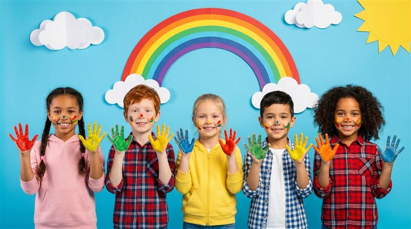

Un jardín ideal para educar a tus hijos

En Casita de Jesús creamos un espacio donde cada niño es valorado en su autenticidad y puede florecer en un ambiente seguro, amoroso y lleno de magia.
Cada niño es atendido en un clima de amor, valoración y respeto desde los 0 a los 6 años.
Desarrollamos armónicamente las capacidades físicas, intelectuales, afectivas, sociales, éticas y estéticas.
Acompañamos a las familias en el hermoso camino de la crianza con amor y crecimiento mutuo.
Nutrimos mente, corazón y espíritu para que cada niño explore su ser con libertad y felicidad.
Razones por las que las familias confían en nosotros para el cuidado y educación de sus hijos.
Cada niño es estimulado según su ritmo de crecimiento y desarrollo.
Instalaciones con pisos antideslizantes, escaleras protegidas y zona verde.
Aprender jugando: experiencias significativas que despiertan la curiosidad.
Acompañamos a los padres en el camino de la crianza y el crecimiento mutuo.
Palabras de papás y mamás que hacen parte de nuestra comunidad.
Mi hijo va feliz todos los días. Se siente el amor y el cuidado en cada detalle. ¡Recomendados!
La atención personalizada y el ambiente seguro me dieron total tranquilidad. Son maravillosos.
Una educación con amor y valores. Mi hija aprendió muchísimo y creció feliz con ellos.
Lo que más nos preguntan las familias.
Trabajamos los niveles de párvulos, pre-jardín, jardín, kínder y transición, con una metodología centrada en el juego, el arte y el desarrollo personal de cada niño.
Atendemos de lunes a viernes, de 8:00 a.m. a 4:00 p.m.
Contáctanos por WhatsApp, teléfono o el formulario de la página de contacto. Trabajamos con cupos limitados, por eso te recomendamos reservar con anticipación.
Dos uniformes: una sudadera para gimnasia, paseos y salidas, y un delantal para las actividades comunes del jardín.
Agenda una visita y descubre el espacio mágico donde tu hijo podrá crecer feliz.
Agenda tu visita